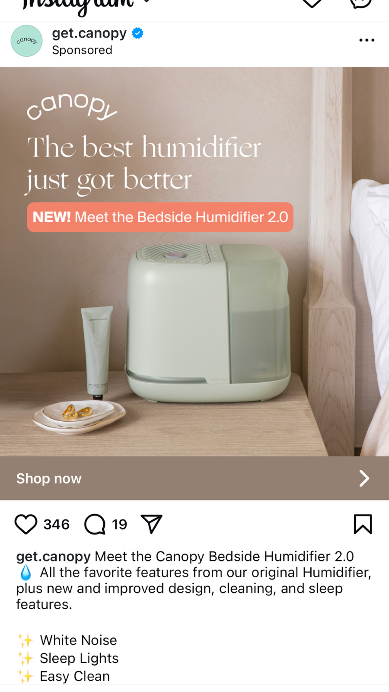
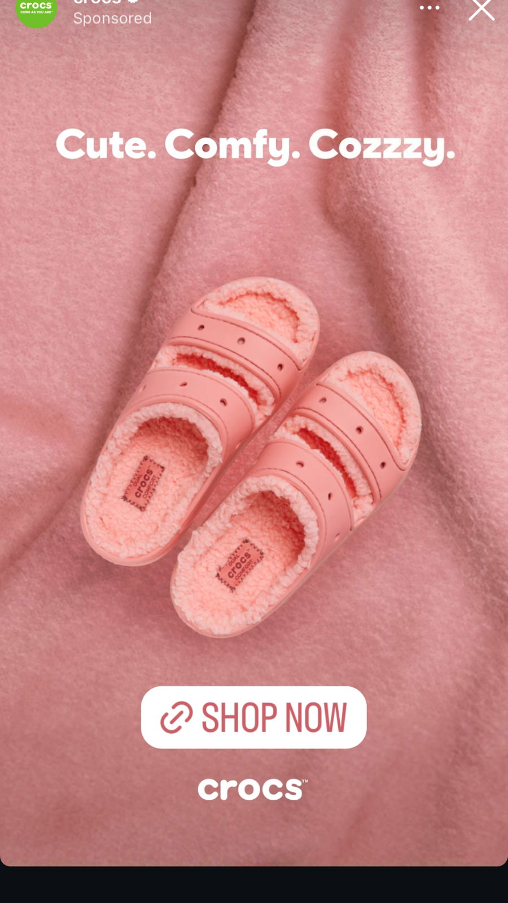
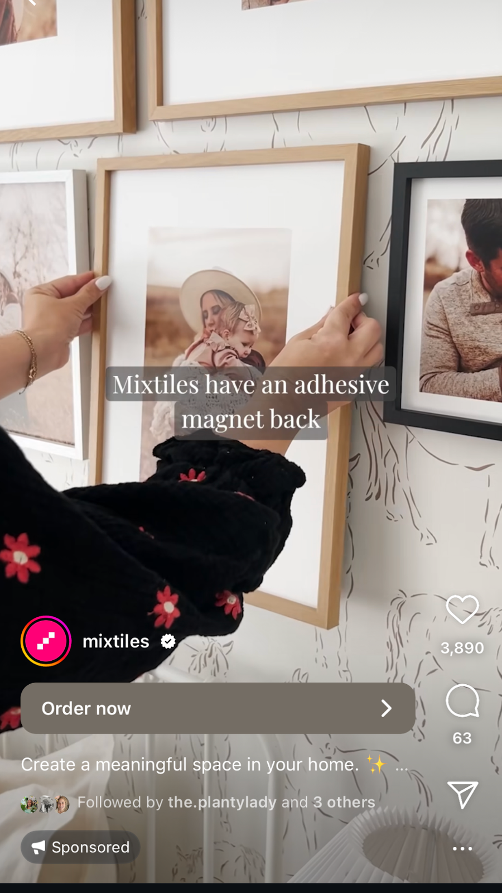
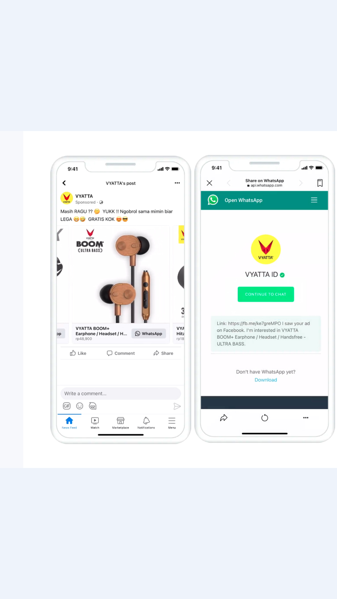
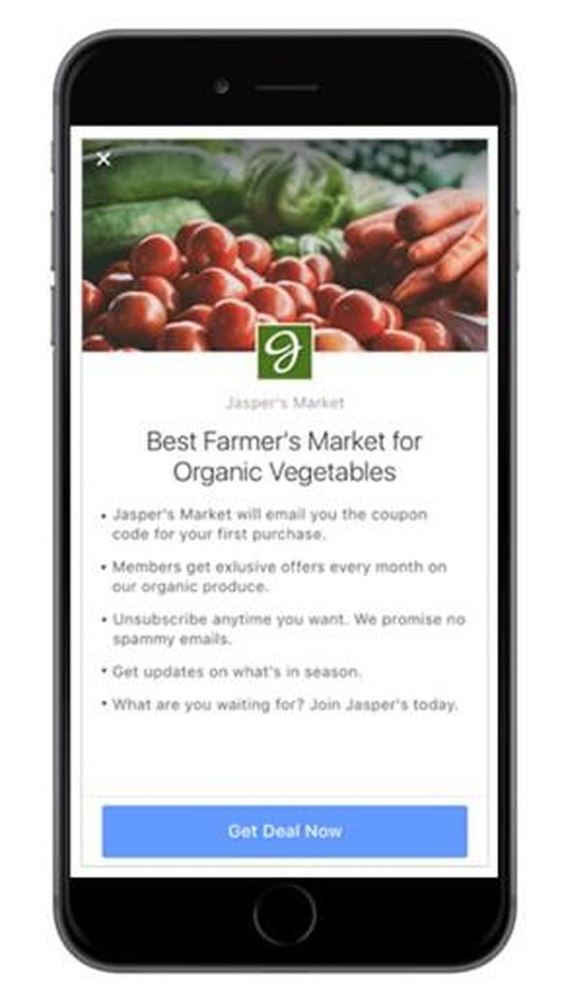

本版聚焦三項決策：是否啟動、用哪種廣告形式、如何用闸門控制風險並推進有效激活。
Executive Decision Page




用途：先用對話拿到高意向樣本，再按有效諮詢率決定放量。
預設篩選問題（3 問）：
Q1 你的店型是茶餐廳/快餐/外賣店/其他？
Q2 你現在用緊邊套 POS 或點餐系統？（沒有/有，品牌可選填）
Q3 你最想先解決哪一件事？（外賣平台訂單整合/掃碼點餐/收銀出單/成本上限）
有效諮詢判定（預設）：店型符合目標，且表達明確需求或願意了解試用/演示即判定有效；不符合則判定無效，並在回流字段記錄無效原因（枚舉）。
切換策略：當主選 CPL 過高或有效諮詢率偏低時，用 Lead Ads 補足樣本量並穩定成本。
| 形式 | 目標（解決什麼） | 畫面（看到什麼） | 路徑（點了去哪） | 優點 | 風險 / 限制 | 適用前提 |
|---|---|---|---|---|---|---|
| Feed | 穩定曝光與基礎導流 | 貼文流中的贊助圖文或短片 | 表單、訊息或落地頁 | 覆蓋穩、理解門檻低 | 互動深度有限 | 已有清楚賣點與CTA（行動按鈕） |
| Stories | 快速拉高短期點擊 | 全屏直式短畫面 | 上滑進入表單或訊息 | 行動感強、啟動快 | 停留短，訊息要非常直白 | 已準備簡潔文案與單一訴求 |
| Reels | 擴新客與補量測試 | 短影片流插播內容 | 點擊進訊息或落地頁 | 觸達廣，容易拿新樣本 | 素材差會快速失效 | 有可快速迭代的短片素材 |
| Lead Ads | 收集名單、控每條線索成本 | 點擊後彈出即時表單 | 提交後進名單池 | 留資阻力低，量較穩 | 名單品質差異大 | 有明確欄位設計與無效過濾規則 |
| Click-to-Message | 獲取高意向對話 | 點擊後開啟對話框 | WhatsApp / Messenger 對話 | 可快速判斷意向強弱 | 回覆品質不穩會影響轉化 | 已有統一開場話術與記錄口徑 |
| 字段名（繁中） | 說明 | 數據來源 | 用途 |
|---|---|---|---|
| 活動來源（Campaign） | 線索所屬投放活動名稱 | Meta 後台 | 判斷哪個活動帶來有效量 |
| 廣告組來源（Ad Set） | 線索所屬受眾/版位組合 | Meta 後台 | 定位受眾設定是否有效 |
| 素材來源（Creative） | 線索來自哪支素材 | Meta 後台 | 識別高效素材方向 |
| 線索建立時間 | 首次提交表單或發起對話時間 | Meta 表單 / WhatsApp / Messenger | 觀察時段表現與分配 |
| 店舖類型 | 茶餐廳/快餐/咖啡店/其他 | 表單欄位 / 人工標記 | 看垂直類別適配度 |
| 店舖規模 | 單店/2-5店/連鎖 | 表單欄位 / 對話補充 | 判斷客群價值分層 |
| 是否有效諮詢 | 是否符合有效諮詢定義（是/否） | 人工判斷 | 建立質量闸門核心指標 |
| 無效原因 | 非餐飲/非香港/無預算/僅詢價等 | 人工標記（枚舉） | 反推受眾與文案問題 |
| 是否進入試用 | 未進入/已邀約/已開通 | CRM / 業務紀錄 | 看諮詢到試用轉化 |
| 激活完成項（三項） | 登入、綁定設備、菜單錄入勾選狀態 | 後台數據 | 看激活卡點在何步 |
| 激活合併狀態 | 未激活/部分完成/完成激活 | 後台數據 | 計算 7 天激活率 |
| 備註與下一步 | 本條線索的跟進判斷與行動 | CRM / 人工填寫 | 避免重複跟進與遺漏 |
| 核心賣點 \ 廣告形式 | Click-to-Message（主） | Lead Ads（輔） |
|---|---|---|
| Pay as you go No Contracts + No Monthly Fees（只為使用付費） |
測什麼：在對話首句直接帶出「無合約、無月費」能否提升回覆意願。 成功信號：對話啟動率上升，且有效諮詢率維持或提升。 首發素材形態建議：問句型開場 + 1 句承諾 + 1 個 CTA 引導對話。 |
測什麼：表單標題強調「No Contracts + No Monthly Fees」能否提高提交意願。 成功信號：CPL 下降，且無效原因中「預算不符」占比下降。 首發素材形態建議：標題直接承諾 + 證據點 + 少字段表單。 |
| Unified Delivery Aggregator 多平台訂單一隊列 + 菜單/庫存同步 |
測什麼：以「多平台訂單集中處理」為主題的問答能否吸引外送量高門店。 成功信號：有效諮詢中「外送平台多店」比例提升，進入試用比例提升。 首發素材形態建議：問句型開場 + 1 句承諾 + 1 個 CTA 引導對話。 |
測什麼：表單加入「目前使用幾個外送平台」欄位是否提升線索可分層性。 成功信號：有效諮詢率提升，且高價值線索占比提升。 首發素材形態建議：標題直接承諾 + 證據點 + 少字段表單。 |
| Contactless QR Ordering 掃碼點單支付 + 更快翻台/更短排隊 |
測什麼：以「縮短排隊、加快翻台」情境提問，能否拉高高峰時段痛點客群回覆。 成功信號：有效諮詢率提升，且激活完成率（三項）提升。 首發素材形態建議：問句型開場 + 1 句承諾 + 1 個 CTA 引導對話。 |
測什麼：表單創意展示掃碼點單流程，是否能提高店內用餐型門店留資。 成功信號：提交率穩定下，進入試用比例提升。 首發素材形態建議：標題直接承諾 + 證據點 + 少字段表單。 |